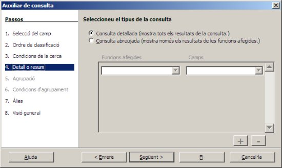
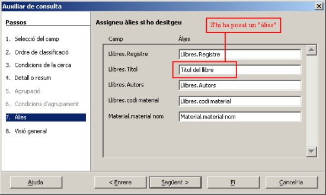

Una segona forma de crear les consultes és mitjançant l'ajut de
l'assistent de consultes, al qual accedim des d'aquesta opció de la
finestra de consultes:
Ara per explicar aquest sistema de fer consultes, ho farem
mitjançant un exemple, és a dir intentant respondre aquesta nova pregunta:
Quants llibres són diccionaris en la biblioteca?
També hem de decidir quins camps volem que es mostri en el resultat de la consulta, i a quines taules pertanyen aquestes dades.
De moment, activem l'opció de l'assistent
i de forma automàtica s'iniciarà aquest mostrant-nos una sèrie de
finestres a les que haurem de donar resposta per completar el procés.
La primera d'elles serà aquesta:
En ella haurem de triar les taules a la part superior, i dins
d'elles els camps que volem. Quan els veiem, es tracta de passar-los a
la dreta amb alguns dels botons que apunten cap aquesta direcció. Un
cop els tenim a la dreta, ja podrem continuar. En aquest cas hem triat:
Tal com es pot veure en aquesta imatge:
Quan tenim els noms dels camps triats i passats a la part dreta de la finestra, ja podrem donar al botó Següent. La finestra que obtindrem serà aquesta:

En ella podrem triar l'ordre que volem que mostri la resposta de
la consulta. En el nostre exemple, hem triat que volem que els llibres
es mostrin en ordre ascendent segons la dada del Titol del llibre.
Polsem sobre el botó següent i ens apareixerà aquesta finestra:
Com es pot apreciar, en ella s'ha donat el criteri, i és que el
valor del camp codi material sigui = “dic”. També se'n podria donar
algun altre de forma simultània, és a dir que fos un diccionari i també
que fossin escrits en català (per que això fos possible, en les
finestres anteriors hauríem d'haver triat també el camp Idioma del
llibre)
Fent clic a Següent, se'ns mostrarà aquesta finestra, en la qual podrem
dir que ens mostri tots els resultats o només d'una forma abreviada:

Triem tots, i passem a la següent finestra:

Si volem que la resposta de la pantalla mostri noms dels camps
diferents al real que tenen, ho posarem aquí. En l'exemple, hem canviat
titol (nom del camp) per Titol del llibre (àlies) i aquest últim serà
el que es mostrarà al final.

Aquí hem arribat al pas de l'assistent on cal triar el nom de la
consulta que quedarà guardada. Polsem el botó Fi i accedirem al disseny
de la consulta per tal de assegurar-se de que les dues taules quedin
vinculades tal com mostra aquesta imatge.
Cas de no estar-ho, cal establir manualment la relació entre els camps
codi material de la taules Llibres i codi material de la taula
Material. Un cop fet això, podem tancar el disseny de la consulta i
desar el canvis efectuats, si és el cas.
La consulta estarà feta i la segúent imatge ens mostra el seu resultat:
Si la volem modificar tenim l'ocasió de fer-ho a partir del disseny de la consulta, el qual interessaria que deixesim així:
I la resposta de la consulta serà aquesta (es mostra el final de
la mateixa per poder veure quants registres hi ha, que són 31 en
total):
Podem apreciar els àlies també en la mateixa imatge. Li posem el nom de Consulta02:Diccionaris, i la desem tal com queda.
Aquí acaba l'explicació de l'ús de l'assistent de consultes. És útil i fàcil, però de vegades dóna alguna errada en els passos finals. Normalment quan es fa només tenint en compte dades d'una taula no sol fallar, però quan en els primers passos de l'assistent es trien més d'una taula, de vegades es queda aturat en la darrera pantalla. S'ha detectac que aquest problema sol aparaeixer quan s'utilitza una clau forània en la vista. El problema pot solucionar-se si en comptes d'agafar la clau fòrània incorporem en el seu lloc la clau primària de la taula relacionada.

|
|

|
|